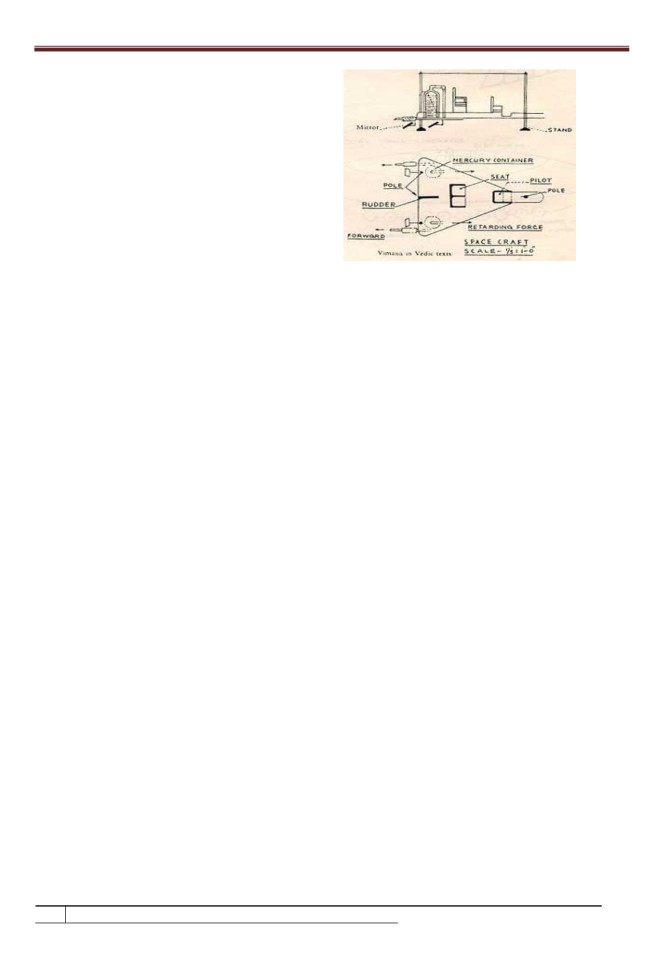
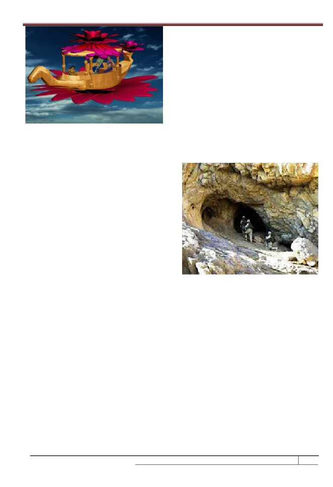

[ VOLUME 2 I ISSUE 2 I APRIL - JUNE 2015 ]
E ISSN 2348 -1269, PRINT ISSN 2349-5138
Mercury Propulsion System in Vedic Vimanas and
Modern Spacecrafts
Shivanandam M.
Professor and Head,
Sri Chandrasekharendra Saraswathi Viswa Mahavidyalaya,
Kanchipuram - 631561
Received June 1, 2015
Accepted June 5, 2015
ABSTRACT
Ancient Indian culture 7000 years ago knows how to create Vimanas to
traverse the sky and beyond using a technology that NASA is still trying to harness today.
There are many books and websites which forcefully and passionately assert that
technologically advanced aircraft and spacecraft were in common use over the Indian
subcontinent thousands of years ago. The sources also claim that advanced space
propulsion technology being researched by NASA is in fact directly inspired by ancient
flying machines. The references mentioned from Vedic texts such as Rig Veda, Yajur Veda,
Srimad Bhagavatham, Ramayana, Mahabharatha, Vaimanika Shastra and Samarangana
Suthtradhara cites Vimanas that fly in air, water and land. They mention various propulsion
including Mercury propulsion. Vaimanika Shastra provides complete manual for Design,
Material selection, Manufacture, Operation, Space suits, Food, Tackling enemies, Becoming
invisible etc. S.B.Talpade, Sanskrit scholar has designed and constructed an aircraft based
on Vedic principles and demonstrated the first unmanned flight.
Key words : Vedic Vimanas; Mercury Propulsion; Rig Veda; Yajur Veda; Srimad
Bhagavatham; Ramayana; Mahabharatha; Vaimanika Shastra; Samarangana
Sutradhara.
1. Introduction
Wright brothers demonstrated on December
launching of SPUTNIK-1 in October 1957 by
17th 1903 that it was possible for a manned,
USSR. The launch of SPUTNIK-I was followed
heavier than air machine to fly. But in 1895,
by space race. In the last
50 years, USA,
eight years earlier, the Sanskrit scholar
Russia and Europe has launched a variety of
S.B.Talpade designed a basic aircraft called
spacecrafts within the earth and then to other
Marutsakthi based on Vedic technology and it
planets. During the Vedic period (10,000AD)
took off unmanned before a large audience in
in ancient India, the flying machine was called
the Chowpathy beach of Bombay. Talpade
Ratha and later vimana. The Vimanas were
was the first creator of an aircraft in modern
used for travel from one place to another
times [1].
place, from one country to another and
between the planets.
Rocket technology was not available to place
a spacecraft into a low orbit until the
136
IJRAR- International Journal of Research and Analytical Reviews
Research Paper
[ VOLUME 2 I ISSUE 2 I APRIL - JUNE 2015 ]
E ISSN 2348 -1269, PRINT ISSN 2349-5138
2. Propulsion Systems
Table I compares the performance of
Most of the spacecrafts orbit around earth,
chemical propellants with electric ion
others orbit the sun or moon or other planets.
propellant
The spacecraft need a means of moving
Table 2.1 Comparison of Propellants
through the space. To move from an orbit to
Velocity
Specific
Fuel Mass
Propellants
Km/s
impulse
Kg
another, the spacecraft has to escape the
Solid
1
100
190,000
gravitational attraction of the planet and
Bi chemicals
5
500
8,200
accelerate to a velocity sufficient to
Ion Thruster
50
5000
620
counteract the planet’s gravitational pull or
2.2 Propellants
field. Such high acceleration requires a lot of
Following are the propellants used in electric
energy. The journey of any spacecraft starts
propulsion.
with rocket propelled vehicle which is the
Mercury
only means of overcoming the earth’s
Xenon
gravitational field [2]. Propulsion system is
Argon
required to move the spacecraft to further
Krypton
orbit.
Hydrogen
2.1 Electric Propulsion
The thrusters are called after the propellants
During the early days, chemical propulsion
and method of acceleration as:
was used where the chemical reactions of the
Ion thrusters
propellant is used to produce a flow of fast
Hall thrusters
moving hot gas. Since the chemical thrusters
Plasma thrusters
are unable to generate high velocity and high
Ion and plasma thrusters are used in many
impulse, electric propulsion
(EPS) was
spacecrafts for interplanetary missions [4].
developed. Electric propulsion is a generic
Mercury vortex propulsion cited in Vedic
name encompassing all the ways of
texts is the forerunner for ion thrusters. The
accelerating a propellant using electric
image of a hall thruster is shown in Fig.1
power. In the electric propulsion, the charged
particles of the propellants are set in motion
by electric field and magnetic field
accelerates them. With electric field and
magnetic field, the charged particles are
accelerated and then ejected by the thrusters,
thus producing the desired velocity and
impulse [3]. Generic name is ion thruster.
Fig.1 Hall thruster
Research Paper
IJRAR- International Journal of Research and Analytical Reviews
137
[ VOLUME 2 I ISSUE 2 I APRIL - JUNE 2015 ]
E ISSN 2348 -1269, PRINT ISSN 2349-5138
2.3 NASAs Ion Engine
Rig Veda
NASA
(National Aeronautics and Space
Yajur Veda
Administration) is trying to create an ion
Srimad Bhagavatham
engine, a device that uses a stream of high
Ramayana
velocity electrified particles instead of a blast
Mahabharata
of hot gases like in present jet engine. The
Vaimanika Sashtra
future spacecraft engine planned by NASA
Samarangana Sutradhara
uses mercury bombardment units powered
Manuscripts from Ashoka
by solar cells. The mercury propellant is
A brief description is as follows.
vaporized, fed into the thruster discharge
3.1 Rig Veda
chamber, ionized, converted into plasma, and
The Rig Veda, the oldest document of the
accelerated through small openings to pass
human race includes references to the
out of the engine at velocities between 1200
following types of Vimanas and propulsion
to 3000 kilometers per minute. But, so far
[5].
NASA is successful only to one pound of
Jalayan
thrust which is inadequate. But 108 years
A vimana designed to operate in water and
ago, S.B.Talpade, a Sanskrit scholar of
air (Rig Veda 6.58.3)
Bombay was able to use the knowledge of
Kaara
Vaimanika Shastra to produce sufficient
A vimana that operate in ground and water
thrust to lift his aircraft 1500 feet into the air.
(Rig Veda 9.14.1)
2.4 Advantages of EPS
Tritala
The advantages of EPS are as follows.
A vimana consisting of three floors (Rig Veda
Requires less propellants
3.14.1)
More efficient
Tri Chakra Ratha
Propellant ejection is 20 times faster
A three wheeled vimana designed to operate
Regulates the impulse accurately
in air (Rig Veda 4.36.1)
Precise control of position and
Vayu Ratha
orientation of spacecraft
A vimana powered by wind or gas (Rig Veda
5.41.6)
3. References from Vedic literatures
Vidyut Ratha
The following ancient literatures mention
A vimana powered by solar energy (Rig Veda
Vimanas
(Ratha, air chariots, airplanes,
3.14.1).
spaceships and spacecrafts) and propulsion
Figure below shows a Rukma Vimana.
systems.
138
IJRAR- International Journal of Research and Analytical Reviews
Research Paper
[ VOLUME 2 I ISSUE 2 I APRIL - JUNE 2015 ]
E ISSN 2348 -1269, PRINT ISSN 2349-5138
3.4 Ramayana
The seven greatest capital cities of Rama,
developed fifteen thousand years ago in
northern India and Pakistan was known as
“The Seven Rishis Cities”. The people in the
seven cities used different types of Vimanas
such as double deck, circular shaped vimana
Fig.2 Rukma Vimana
with portholes and a dome.
3.2 Yajur Veda
They flew with the speed of sound and gave a
Yajur Veda 10.19 quotes the following [6].
melodious sound. The epic describes Vimanas
Royal skilled engineers built sea boats
of various shapes such as saucer shaped and
propelled on water.
long cylindrical shaped and various sizes
Vimanas move and fly upward in the
such as Ahnihotra with two engines, elephant
midst of clouds.
Vimanas with multi engines and others
Vimanas move as boats on water and
named after kingfisher, ibis and other
fly over clouds.
animals. Generally Vimanas fall into two
3.3 Srimad Bhagavatham
categories. Manmade spacecrafts that
Srimad Bhagavatham (sixth canto, para 3)
resemble aircraft and fly with birdlike wings
describes king Citaketu traveling in the outer
[8].
Spacecrafts
with unstreamlined
space on a brilliantly effulgent airplane given
structures fly in a mysterious manner and
by Lord Vishnu saw Lord Shiva [7]. The
generally are not made by human beings.
arrows released by Lord Shiva appeared like
They have features of UFO’s. The epic cites
fiery beams, emanating from the sun and
Pushpaga Vimana with swan soared into the
covered the three residential Vimanas which
sky with loud noise with king Ravana, Sita
could no longer be seen. The figure below
and Trijatta to make Sita to see the battle
shows an alien in the Vimana.
field.
3.5 Mahabharata
Flying Vimanas were cited at 41 places in
Mahabharata. The asura king Salva had an
aerial vehicle called Saubha Vimana with
which he attacked Dwaraka capital of Lord
Krishna. He began to shower missiles and
landed in the high seas. From one krosa
(1500 meters) above the ground, Salva gave a
Fig.3.Alien in the Vimana
Research Paper
IJRAR- International Journal of Research and Analytical Reviews
139
[ VOLUME 2 I ISSUE 2 I APRIL - JUNE 2015 ]
E ISSN 2348 -1269, PRINT ISSN 2349-5138
fierce fight with Krishna who threw a
Bharadwaja through the report of Shri
powerful chakra which hit the vimana in the
K.P.N.Sastry, the Mysore representative of
middle and broke it into pieces. The damaged
Press Trust of India in 1952. The Vaimanika
vimana fall in the sea. According to Drona
Shastra, Science of Aeronautics is an early
parva, Vimanas are described as sphere
20th century Sanskrit Text on Aeronautics
shaped and move at great speed generated by
obtained by mental channeling, about the
mercury propulsion. The Vimanas moved like
construction of Vimanas, the chariots of the
an UFO going up, down, backwards and
Gods. It contains 3000 shlokas in 8 chapters
forwards. Varna parva, section XLIII
[10].
Lord Brahma, the chief demigod and
describes the aerial journey of Arjuna to
engineer of the Universe have developed
Amravati, city of Indra. Arjuna observed
several Vimanas for other Gods and
Vimanas stationed properly, frequent landing
Demigods. These were in various natural
and takeoff. Thousands of celestial Vimanas
shapes and incorporated the use of wings
capable of going everywhere at will and
such as peacocks, eagle, swans etc. Other
stationed in proper place.
Vimanas were developed for human beings in
Hitler and the Nazi were interested in ancient
the Earth by great seers of Vedic knowledge
India and Tibet and sent expeditions to both
and aliens in other planets. In the course of
these places in order to gather esoteric
time, there were three basic types of
evidence. It was from these people that the
Vimanas. In Tretayuga, men were adopting in
Nazis gained some of their scientific
mantras. The Vimanas of that age were
information. According to Drona parva, a
powered by means of knowledge of mantras.
vimana shaped like a sphere and fly along at
In Dvaparayuga, men had developed
great speed on a mighty wind generated by
considerable knowledge of tantra or ritual.
mercury propulsion [9]. It is possible that
The Vimanas of this Yuga were powered by
mercury did have something to do with
the use of tantric knowledge. In Kaliyuga,
propulsion or more possibly with guidance
knowledge of both mantra and tantra are
system. Soviet scientists have discovered age
deficient. The Vimanas of this age are known
old instruments used in navigating cosmic
as kritaka, artificial or mechanical. Vaimanika
vehicles. The devices are hemispherical
Shastra lists 25 variations of the mantrika
objects of glass or porcelain ending in a cone
Vimanas, 56 variations of tantrica Vimanas
with a drop of mercury inside.
and 25 varieties of kritakash Vimanas. With
3.6 Vaimanika Sastra
regard to the shape and construction, there is
The world came to know the existence of the
not much difference. They differ only by
manuscript on Vimanas by Maharishi
propulsion.
140
IJRAR- International Journal of Research and Analytical Reviews
Research Paper
[ VOLUME 2 I ISSUE 2 I APRIL - JUNE 2015 ]
E ISSN 2348 -1269, PRINT ISSN 2349-5138
The text contain flight manuals, aerial routes,
3.7 Manuscripts by Asoka
procedures for normal and forced landings,
The Indian Emperor Asoka started a “Secret
instructions regarding the condition of the
Society of the Nine Unknown Men”, great
pilots, clothes to wear while flying, the food
Indian scientists who catalogued the many
to eat, spare parts required, materials for
sciences. Asoka kept their work secret
craft manufacture, power supplies and so on.
because he was afraid that the advanced
The text also contains instructions on
science catalogued by these men, culled from
avoiding enemy craft, to hear and see in
ancient Indian sources, would be used for the
enemy aircrafts, how to become invisible and
evil purpose of war. The
“Nine unknown
tactics to avoid collisions with birds.
Men” wrote a total of nine books, presumably
The Vaimanika Shastra describes the
one each. One of the books is “The Secrets of
construction of mercury vortex engine. This
Gravitation” which dealt with
“Gravity
is same as Vedic ion engine propelled by the
Control”. It is kept in a secret library in India,
use of mercury. Mercury engines were used
Tibet or perhaps even in North America [11].
in many Vimanas. In mercury engine,
Years ago, the Chinese discovered some
propellant tanks are filled with liquid air
Sanskrit documents in Lhasa, Tibet and sent
obtained from the atmosphere. The air is
them to the University of Chandigarh for
injected into expansion chamber and heated
translation. As per Dr.Ruth Reyana of the
by mercury. The superheated M.H.D plasma
University, the documents contain directions
air will expand through the
for building interstellar spaceships. The
nozzle. The strange ball of light surrounding
propulsion was
“Anti-Gravitational”, a
the craft is the magneto hydrodynamic
centrifugal force strong enough to counteract
plasma, a hot re circulating air flow. The ball
all gravitational pull. The manuscripts reveal
of light makes the craft to appear alive. When
the secrets of “Antima” the cap of invisibility
the ionized bubble of air surrounding craft or
and “Garima” the secret of becoming as heavy
UFO is controlled, the ionization of the air
as a mountain.
may shift through every color of the
3.8 Samarangana Sutradhara
spectrum, obscuring the aircraft from view
Samarangana Sutradhara is a manuscript
and disappear.
composed in Sanskrit by king Bhoja of Dhar
When mercury is heated, it gives hot vapor
in 11th century A.D. The treatise deals with
which is poisonous. When radioactive
technical subjects such as town planning,
mercury is heated, emit radiation and when
house architecture, temple architecture and
leaked become dangerous to pilot and crew.
sculptural arts together with Mudras, canons
of painting. Samarangana Sutradhara is in
Research Paper
IJRAR- International Journal of Research and Analytical Reviews
141

[ VOLUME 2 I ISSUE 2 I APRIL - JUNE 2015 ]
E ISSN 2348 -1269, PRINT ISSN 2349-5138
eighty three chapters with chapter thirty one
specializing in the mechanical contrivances
and yantras. The chapter is devoted to the
construction and operation of several kinds
of aircraft having various methods of
propulsion [12].
King Bhoja used the Sanskrit term yantras
often than the familiar term vimana. His
knowledge was based on Hindu manuscripts
which were ancient even in his time. Some of
Fig.4.Mercury Propulsion
the techniques of manufacture described
The pilot set the dual winged, drive
therein have been in use by British and
whirlwind in motion and the pilot by means
American aircraft companies since World
of mercury power may travel a great distance
War 1 and found to be sound aeronautical
in the sky. There follows the description of a
principles even though described nearly a
much larger, more complex Vimanas
thousand years earlier in this old Sanskrit
powered by four mercury engines.
work. Several types of aerial machines were
4. Specialties of Pushpaga Vimana
described and cover those vimana capable of
The Pushpaga Vimana is often called Flying
flying into solar sphere and interstellar travel.
Palace. Pushpaga in Sanskrit means Flowers.
The yantras body shall be strong and durable,
It is the first flying Vimana mentioned in
made of light materials and the wings joined
Hindu mythology. The Pushpaga Vimana was
smoothly with invisible seams. It can carry
originally made by Maya for Kubera, the God
passengers. It can also be made small and
of wealth, but was later stolen along with
compact and move in silence. Certain aircraft
Lanka, by his half-brother, the demon king
described seem to be winged like modern
Ravana. The special characteristics of this
airplane but it cannot go backwards nor did it
Vimana is that whatever may be the number
can ascend or descend vertically. Inside the
of people sitting in it, always there will be one
vimana, one must place the mercury engine
more seat vacant i.e. if N passengers sit, there
and an Iron heating apparatus properly
will be (N+I) seats. It was basically a Vimana
mounted beneath the engine. The figure
that could soar the skies for long distances
below shows the operation of Mercury
[13]. The figure below shows Pushpaga
propulsion.
Vimana.
142
IJRAR- International Journal of Research and Analytical Reviews
Research Paper

[ VOLUME 2 I ISSUE 2 I APRIL - JUNE 2015 ]
E ISSN 2348 -1269, PRINT ISSN 2349-5138
6. Ancient Vimanas in Time Well
A 5000 year old Vimana from ancient India
was recently discovered in a cave stuck in a
“Time Well” in Afghanistan in 2010 [15]. It
caused the disappearance of eight American
soldiers, likely incinerated, while trying to
extract it from the cave. The report suggested
that the Vimana is still activating and hence
caused the death of 8 soldiers. The Figure
Fig.5.Pushpaga Vimana
below shows the soldiers entering the cave
5. Vimanas and UFOs
containing Time Well.
David Childress, in his book, Vimana Aircraft
of Ancient India & Atlantics[ ] provided many
reports, both recent and from the last few
hundred years, that describes eye witness
accounts of encounters with UFOs that are no
different in size and shape than those
described in these ancient Vedic texts. When
the pilots are seen closer, they are human
like, sometimes with an oriental appearance,
in clothes that are relatively modern in style.
Fig. 6. Cave encasing Vimana in Time Well
In other reports, the craft may have alien type
A group of soldiers made the discovery on a
on board along with ordinary humans
mission in the desert of Afghanistan. The
navigating the craft [14]. The UFOs that are
Vimana was protected by a strange energy
seen around the world may not be from
barrier that was preventing the troops from
distant galaxy, but may be from a secret
extracting the Vimana.
human society or even military installation.
An Electromagnetic Radiation - Gravity Field,
Many of the Vedic texts describe
postulated by Einstein appears to protect the
interplanetary travel. So even if these
Vimana in the Time Well. The unified Field
machines are from other planet, they may be
theory is rumored to be behind the infamous
using the same principle of propulsion that
American World War II experiment in
was described in the universal Vedic
teleportation called Philadelphia Experiment
literature.
that in
1943 caused the sudden
disappearance of US soldiers.
Research Paper
IJRAR- International Journal of Research and Analytical Reviews
143
[ VOLUME 2 I ISSUE 2 I APRIL - JUNE 2015 ]
E ISSN 2348 -1269, PRINT ISSN 2349-5138
7. Conclusions
5. Vimanas and Flying Machines in Vedic
Literature,
www.ancientufo.
The Universal Vedic literatures cited provide
Org/2014/07/vimanas
basic information to design, construct and fly
6. Ancient
Aliens/Vimanas-Arcturi,
hovercraft, aircraft and spacecraft for
interplanetary travel. Vaimanika Shastra and
Vimanas.
Samarangana Suthtradhara provide material
7. Rukma
Vimana-Ancient
Vimanas/
information required for interplanetary
Mathomathi
,
www.mathomathis.
travel and reentry. Ion propulsion cited
Blogspot.com /UFO
10,000 years ago enable a spacecraft invisible
8. Hindu Theories of Creation- Crystalinks,
to others. Tele-audio and Tele-dristi are
excellent gift from Vedic manuscripts to
9. Science & Technology in Mahabharatha: use
of Aircrafts,
modern world. The Space Agencies in India
blogspot. Com/P/use of aircrafts
and abroad shall associate in applied
research on the Vedic findings and progress
.info/vimanas
in space travel.
11. Ashoka’s Secret Society of Nine Men-
References
agazine.com/Feb 15, 2014.
12. Sundarshan
Kumar
Sharma,
apleyades.net/vimanas.
“Samarangana Sutradhara of
Bhoja
2. Joshua L. Rovey, “Deep Space Propulsion
Deva”, ISBN
81-7110-302-2, Parimal
System”,
Missouri
S&T Physics
Publications, Delhi, 2007.
Colloquium, Missouri University of
13. Pushpaga
Vimana
of
Ravana,
Science and Technology, 2010.
www.bharatgyanblog.wordpress.
3. Electric
Propulsion
Technology
Com/2012
Programmes, European Space Agency,
The Netherlands, ISSN 0250-1589, 2002.
Knapp.com/ufos and vimanas
4. Solar Electric Propulsion Technology
15. Vimana
(UFO) Found in cave in
Development, Pre-Decisional
NASA
Afganistan,
www.jimmyprophet.
International Document, NASA, USA.
Wordpress.com/vimana-ufo
144
IJRAR- International Journal of Research and Analytical Reviews
Research Paper